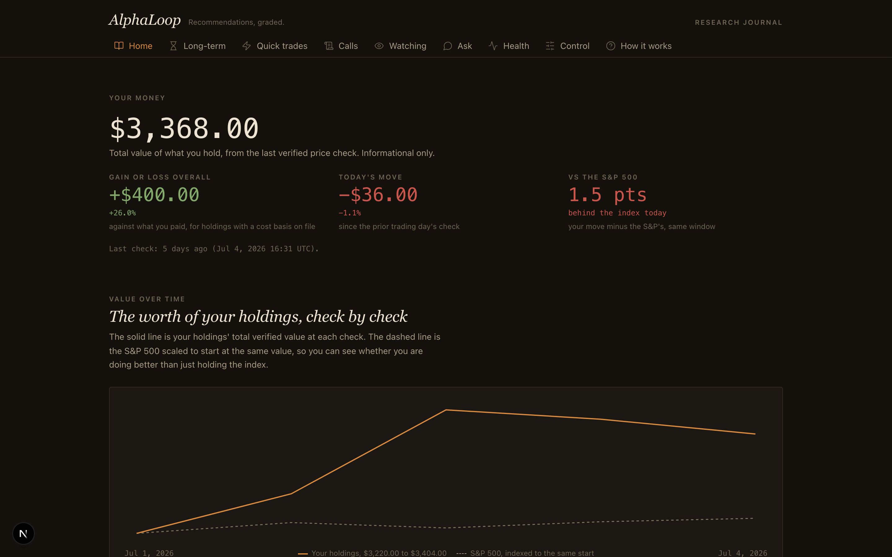
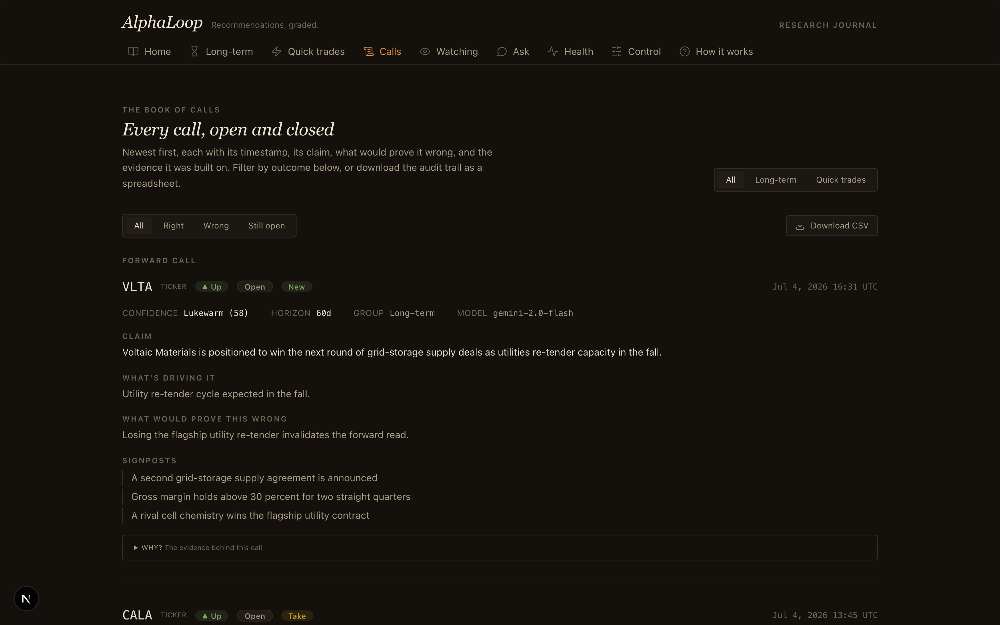
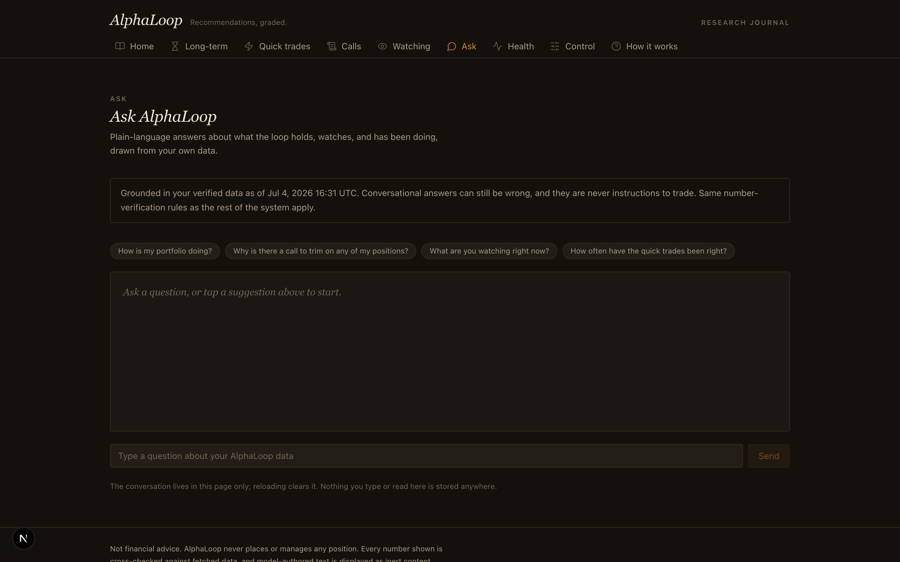

An AI research analyst that keeps score on itself.
It makes investment calls, tracks whether each one turned out right, and learns from its misses. Everything below is its live, unedited record.
Aggregates only. This page never shows holdings, tickers, or model text.
The score so far
Every number here comes from the system's own database, republished through a sanitized export that is physically unable to query private fields.
● Snapshot loading…
How often is it right?
Long-term calls and quick trades are two different games, so they are scored separately. Whichever number is worse stays on this page.
Bad outputs caught, by reason
Model responses discarded by deterministic validators before they could reach anyone
Unattended runs, by job
Every scheduled pass the system has completed on its own
Does its confidence mean anything?
Every call states how confident the system is. This chart is the test: stated confidence against how often those calls actually proved right. Dots on the diagonal mean the confidence is honest.
What it learned
When a scored miss produces a lesson, it is written down and injected into future prompts. After owner review, lessons are published here word for word.
A look inside
The dashboard itself stays private. These screenshots come from a demonstration copy seeded with sample data, so nothing real ships.



Screenshots are being prepared from a demonstration copy of the dashboard, seeded with sample data so nothing private ships. They will appear here.
How the loop works
The whole system is one scheduled loop. Each pass runs unattended on CI cron and leaves a full audit trail in a single SQLite file.
Ingest
Prices, SEC filings, news feeds, and social sentiment are pulled on a market-day schedule and stored as deduplicated events.
Synthesize
Two LLM providers draft calls in strict JSON: a claim, a stated confidence, what's driving it, and the condition that would prove it wrong.
Validate
A deterministic gauntlet checks every field against real symbol lists and freshly fetched prices. Any failure means discard and log.
Notify
Only validated calls reach email and push. Every send passes a compliance gate and a dedup check, so nothing fires twice.
Score
When a call's clock runs out, the system scores it against price data: right or wrong, no partial credit.
Reflect
Missed calls become written lessons, stored and injected into future prompts. The loop gets better by remembering, not by retraining.
Built to distrust itself
The interesting engineering problem was never picking stocks. It was letting a language model near financial analysis without ever taking its word for anything.
Every output is presumed hallucinated
No model response reaches storage or a notification without surviving strict schema parsing, a ticker allowlist, and price cross-checks against independently fetched data. Rejections are logged with a reason code and a hash, never the raw text.
Learning is memory, not weights
Nothing is fine-tuned. Scored outcomes and written lessons live in SQLite and are re-injected into future prompts, so the system improves while staying fully inspectable.
Recommendations only, by constitution
No trading, broker, or order code exists anywhere in the codebase, and an automated compliance scan enforces it. Every action on a real position is manual and human.
Zero secrets in code or prompts
Keys arrive only through CI secrets and environment variables. A gitleaks hook guards every commit, and failure logs carry exception type names, never messages.
Under the hood
Python 3.11 + SQLite
The entire memory is one inspectable database file, versioned by the CI runner itself.
Strict Pydantic schemas
Model output parses against extra-forbidding schemas before any other check runs.
GitHub Actions cron
Five schedules: three market-day checks, a nightly idea hunt with scoring and the daily email, a Sunday self-review.
Dual LLM providers
Gemini and Groq behind one seam, with fallback, so no single provider outage stops the loop.
433 tests, adversarially reviewed
Validator contracts are pinned by tests written before the code, plus independent security and spec audits.
Sanitized public export
The page you are reading. Its generator contains only aggregate queries, so leaking private data has no code path.